Lab 5 Advanced NAT Scenarios#
5.0 - What’s in the lab?#
If you recall in Lab#4 we had an issue where there was no proper connectivity from either the client in Customer-A or B to the shared service application (aws_log1). We will commence lab 5 by solving this issue.
In addition, we will be connecting our last and final customer (customer_c) to the cloud. Finally, we will look at how to solve an advanced scenario with overlapping addresses.
5.1 - Current Topology#
The below diagram explains the problem. If you look at the CIDR ranges of Customer-A-DC and Customer-B-Branch you will notice an overlap as both of them use 172.16.0.0/16. This is the reason why one of them will be successful in connecting to the shared service (aws_log1) whereas the other will fail.
In order for us to solve the problem, we will configure a customized NAT on Customer A’s spoke gateways as well as customer B.
 Figure 1: Explaining the Problem & Solution
Figure 1: Explaining the Problem & Solution
5.2 - SNAT on Customer A#
Figures (2 & 3) show how to get the private address of the Spoke GW of customer-a. The reason we need the IP Address is we will be doing SNAT to this IP Address to resolve the overlapping CIDR problem with Customer-B. Please makes sure to use the IP address from your Pod and not the address on the screenshot.
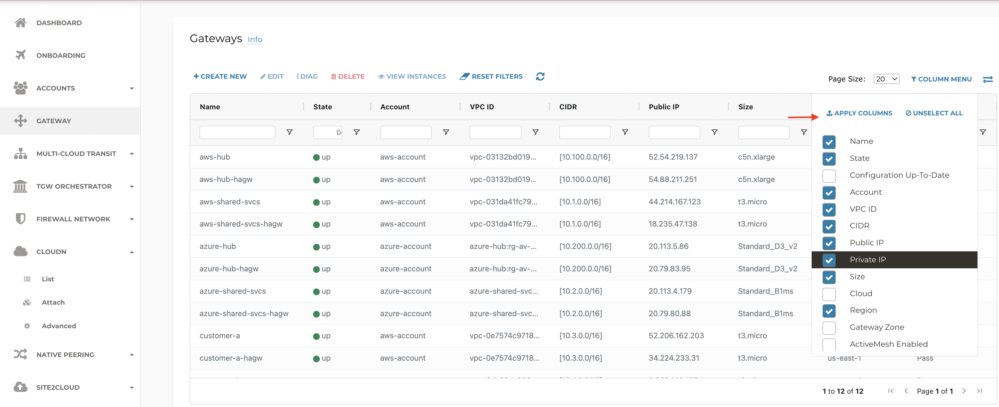Figure 2: Add the Private IP Column
 Figure 3: Edit the Gateway Configuration
Figure 3: Edit the Gateway Configuration
Figures (4 _ 7) walk you through configuring the Customized SNAT Rule.
 Figure 4: Configuring SNAT Rule Part 1
Figure 4: Configuring SNAT Rule Part 1
 Figure 5: Configuring SNAT Rule Part 2
Figure 5: Configuring SNAT Rule Part 2
 Figure 6: Save the SNAT Rules
Figure 6: Save the SNAT Rules
 Figure 7: Update the SNAT Rules
Figure 7: Update the SNAT Rules
Follow the same procedure for Customer A hagw.
 Figure 8: Edit the HA Gateway Configuration_
Figure 8: Edit the HA Gateway Configuration_
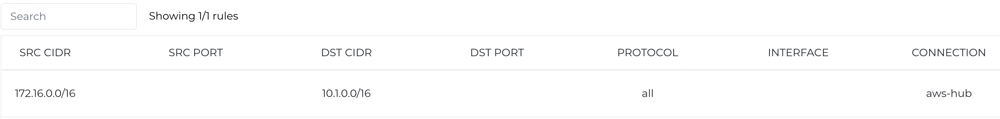Figure 9: Configuring SNAT Rule Part 1
 Figure 10: Configuring SNAT Rule Part 2
Figure 10: Configuring SNAT Rule Part 2
Please don’t forget to save and update.
Now let us do a Proxy test from customer-a-client towards AWS-Log1 should work. Notice the field Source Address, this should be one of the Spoke Gateway IP addresses.
 Figure 11: Proxy Customer A Client to AWS-Log1
Figure 11: Proxy Customer A Client to AWS-Log1
5.3 - SNAT on Customer B#
This will be very similar to how we solved the problem for Customer A. We will select the gateway (customer_b) edit its configuration by configuring the Customized SNAT rule. This is done in Figures 12-14
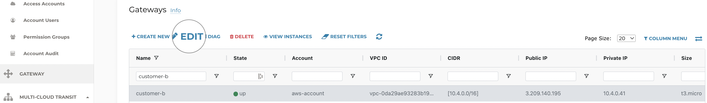Figure 12: Select Customer B Gateway
 Figure 13: Customer B Gateway SNAT Part 1
Figure 13: Customer B Gateway SNAT Part 1
 Figure 14: Customer B Gateway SNAT Part 2
Figure 14: Customer B Gateway SNAT Part 2
Don’t forget to save and update!
Now let us do a Proxy test from customer-b-client towards AWS-Log1 should work. Notice the field Source Address, this should be the private address of Spoke B (doesn’t have to be 10.4.0.41, please check the address within your lab pod)
 Figure 15: Proxy Customer B Client to AWS-Log1
Figure 15: Proxy Customer B Client to AWS-Log1
5.4 - Advanced NAT#
In sections 5.2/5.3 we have solved the problem of being able to access (aws_log1) from all clients in Customer A and B locations (customer_a_dc and customer b branch). What about the reverse direction i.e. initiating traffic from the AWS-Log1 VM towards Customer-A-Client and Customer-B-Client. You might want to try that before you proceed further.
Test leveraging the proxy from AWS-Log1 to customer-a-client and customer-b-client. One of these two tests will not work.
http://aws-log1.pod150.aviatrixlab.com/customer-a-client
http://aws-log1.pod150.aviatrixlab.com/customer-b-client
The problem in a nutshell is also a result of the overlapping addresses of Customers A and B. We will only solve the problem for Customer-A in order to avoid repetition.
The problem and the solution are explained in the below diagram. The instructor will also be explaining the solution before you proceed.
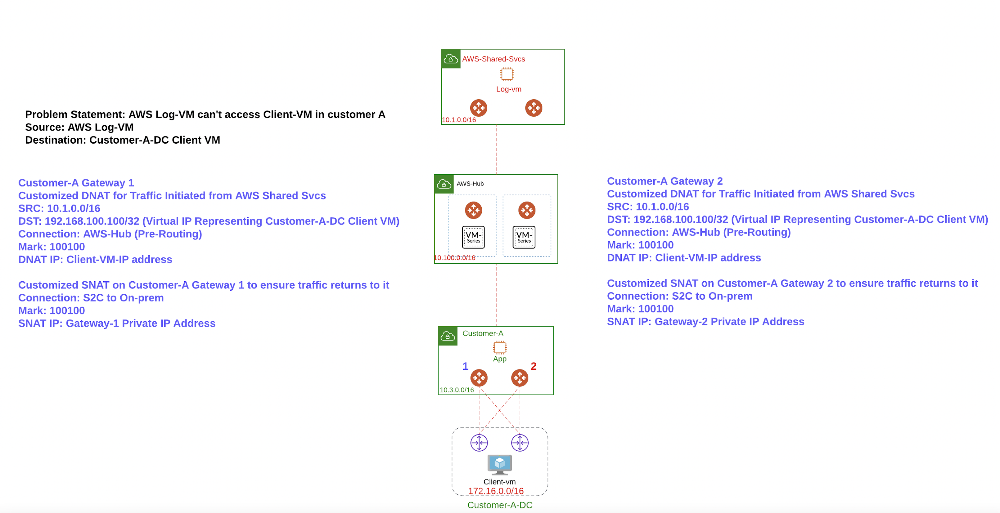Figure 16: Explaining Advanced NAT Scenario
5.4.1 - Configure Advanced NAT on customer-a Gateway#
Figure 17: Edit customer-a GW configuration
 Figure 18: Configure DNAT Rule Part 1
Figure 18: Configure DNAT Rule Part 1
 Figure 19: Configure DNAT Rule Part 2
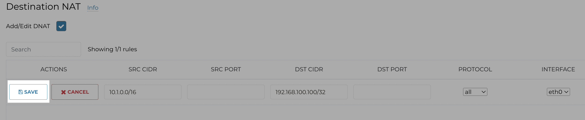Figure 20: Save DNAT Rule
Figure 19: Configure DNAT Rule Part 2
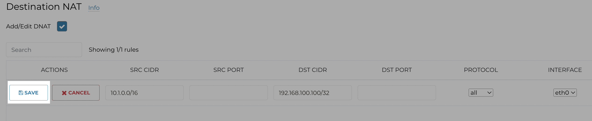Figure 20: Save DNAT Rule
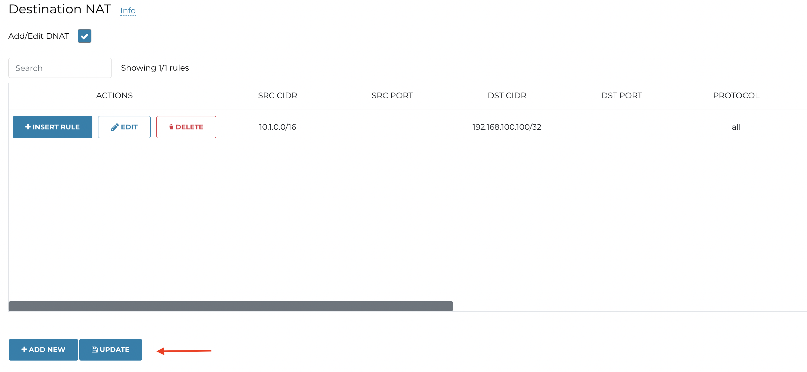
Figure 21: Update DNAT Configuration
 Figure 22: Add new SNAT Rule P1
Figure 22: Add new SNAT Rule P1
 Figure 23: Add new SNAT Rule P2
Figure 23: Add new SNAT Rule P2
 Figure 24: Add new SNAT Rule towards CSR2 Part 1
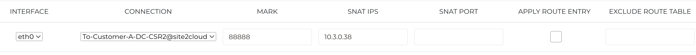Figure 25: Add new SNAT Rule towards CSR2 Part 2
Figure 24: Add new SNAT Rule towards CSR2 Part 1
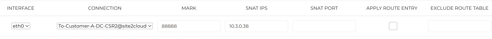Figure 25: Add new SNAT Rule towards CSR2 Part 2
 Figure 26: All 3 SNAT Rules Part 1
Figure 26: All 3 SNAT Rules Part 1
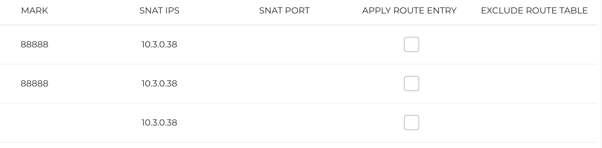Figure 27: All 3 SNAT Rules Part 2
5.4.2 - Configure Advanced NAT on customer-a ha Gateway#
We will follow the same procedure we have done on the customer-a gateway.
We start by selecting the customer-a-hagw and configuring the DNAT Rule.
Figure 28: DNAT Rule customer-a-hagw Part 1
Figure 29: DNAT Rule customer-a-hagw Part 2
Figure 30: SNAT Rule customer-a-hagw Part 1
 Figure 31: SNAT Rule customer-a-hagw Part 2
Figure 31: SNAT Rule customer-a-hagw Part 2
Figure 32: SNAT Rule customer-a-hagw towards CSR2 Part 1
 Figure 33: SNAT Rule customer-a-hagw towards CSR2 Part 2
Figure 33: SNAT Rule customer-a-hagw towards CSR2 Part 2
5.4.3 - Advertise Virtual IP Address#
We have done everything right so far but how would the fabric know of the Virtual IP Address (192.168.100.100/32)? We need Customer-A gateways to actually advertise it into the Fabric as shown below.
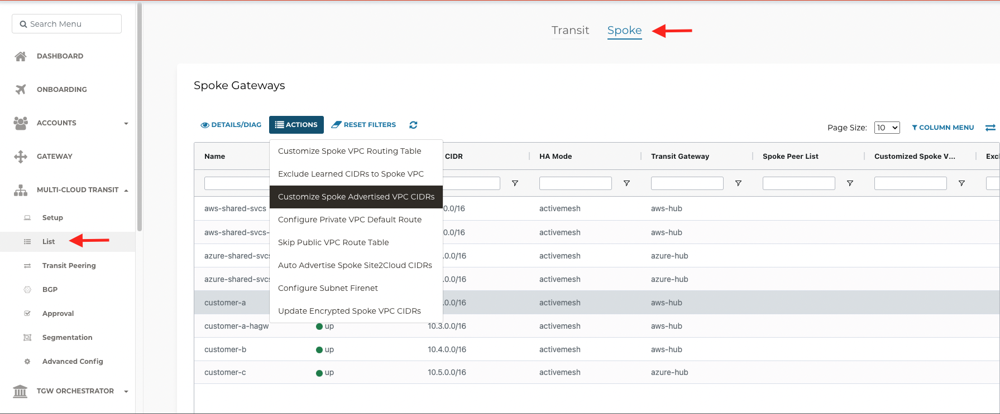Figure 34: Customize Spoke Advertised VPC CIDR Part 1
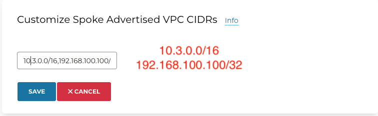Figure 35: Customize Spoke Advertised VPC CIDR Part 2
5.4.4 - Verification#
In this section, we will attempt to ping the virtual IP Addres (192.168.100.100) from AWS-Log1.
Start by SSHing to both instances & customer-a-client run the tcpdump command present in Figure 33. Once tcpdump is running on customer-a-client, initiate the ping towards the Virtual IP address that represents the client. You should see the packet being received by customer-a-client (dnat) while the source address is changed to one of the gateway addresses you configured (snat).
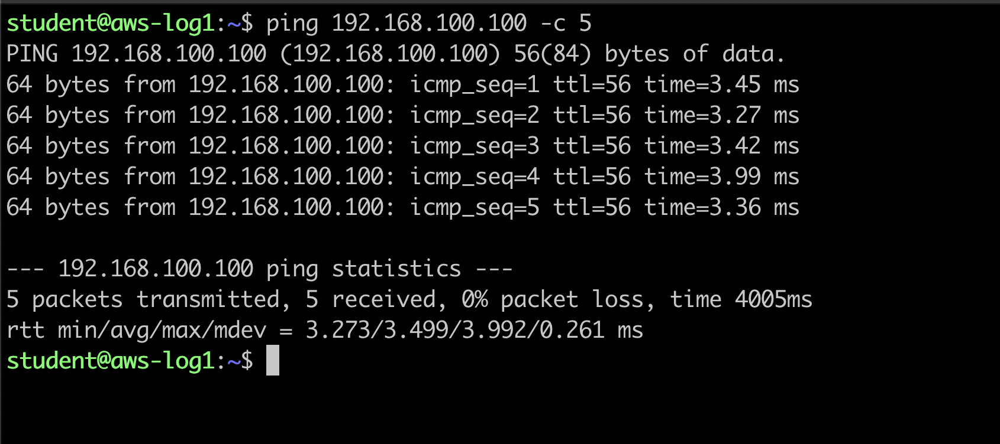Figure 36: Initiate the Ping from AWS-Log1 towards Virtual IP
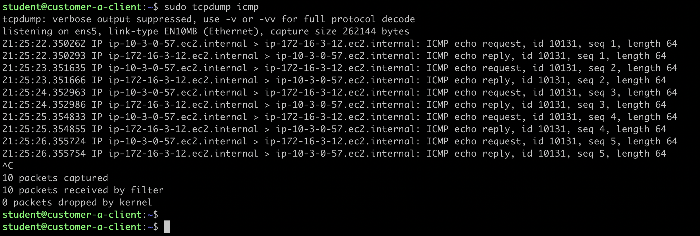Figure 37: Run tcpdump on customer-a-client
5.5 - Mapped NAT Scenario#
In this section, Customer C has asked us to connect its Colocation facility to its Landing Zone. It also needs to benefit from the applications within the shared services segment. One thing to note is that Customer C’s told us that its on-premises router doesn’t support BGP.
 Figure 38: Mapped NAT Scenario with Customer C Explained
Figure 38: Mapped NAT Scenario with Customer C Explained
5.5.1 - Configure S2C with Mapped NAT Towards Customer C#
We will configure the Site2Cloud with Mapped NAT in Figures 34 & 35.
 Figure 39: Configure Mapped NAT Aviatrix Side Part 1
Figure 39: Configure Mapped NAT Aviatrix Side Part 1
 Figure 40: Configure Mapped NAT Aviatrix Side Part 2
Figure 40: Configure Mapped NAT Aviatrix Side Part 2
Now that we have configured the Site2Cloud connection from Aviatrix’ side, we can get the templatized configuration for Customer C CSR.This is shown in Figures 34-36.
 Figure 41: Get the CSR Configuration Template P1
Figure 41: Get the CSR Configuration Template P1
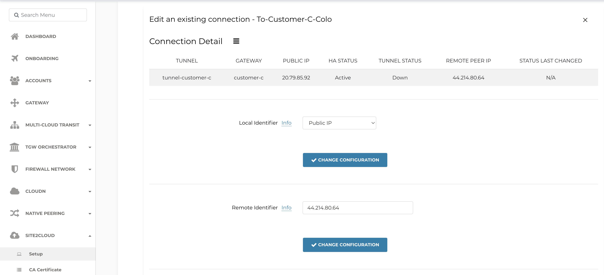Figure 42: Get the CSR Configuration Template P2
Without Enable Traffic to Transit Gateway Mapped NAT will only work towards destinations within the same Spoke VPC. This doesn’t apply to our case as the target VM we want to reach is in the Shared Services thus we need to enable traffic to transit gateway setting. This is shown in Figure 36.
 Figure 43: Enable Forward Traffic to Transit Gateway
Figure 43: Enable Forward Traffic to Transit Gateway
 Figure 44: Get the CSR Configuration Template P3
Figure 44: Get the CSR Configuration Template P3
You need to make the changes highlighted in Figures 45 & 46.
 Figure 45: Edit Customer C CSR Config Part 1
Figure 45: Edit Customer C CSR Config Part 1
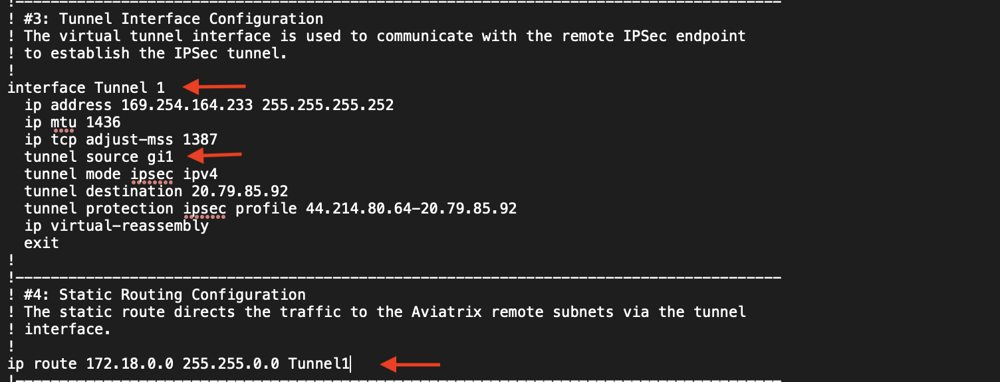Figure 46: Edit Customer C CSR Config Part 2
5.5.2 - Verify Mapped S2C Configuration#
We start by verifying that the tunnel is up on the CSR.
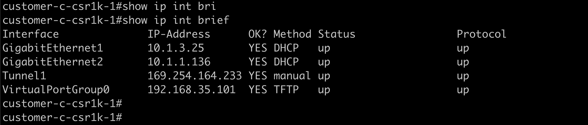Figure 47: CSR Tunnel Status is UP
We also head to Cloud Routes within Copilot to look at the status of the S2C connection. Please note that we are not running BGP on top of this connection.
 Figure 48: Head to Cloud Routes within Copilot
Figure 48: Head to Cloud Routes within Copilot
 Figure 49: S2C Tunnel to Customer-C-Colo is UP
Figure 49: S2C Tunnel to Customer-C-Colo is UP
Finally, we initiate traffic from customer-c-client towards AWS-Log1 VM.
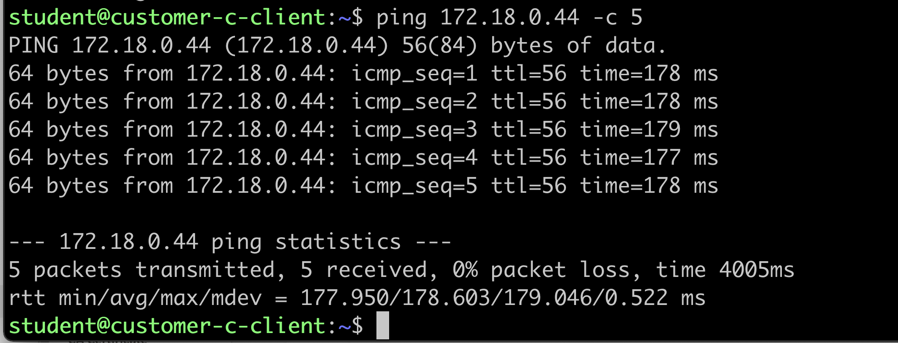 Figure 50: Successful Ping from Customer-C-Client towards AWS-Log1 VM
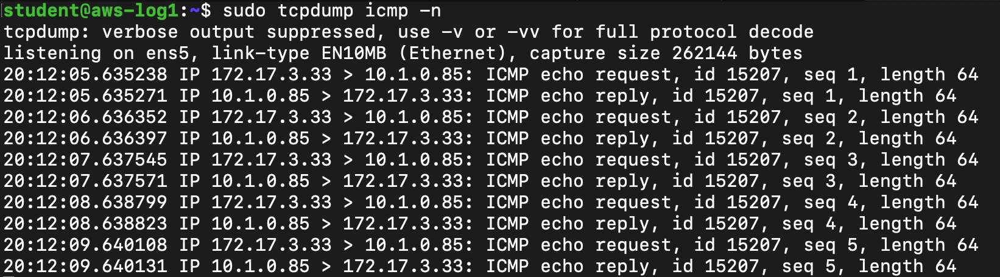 Figure 51: tcpdump output on AWS-Log1 VM